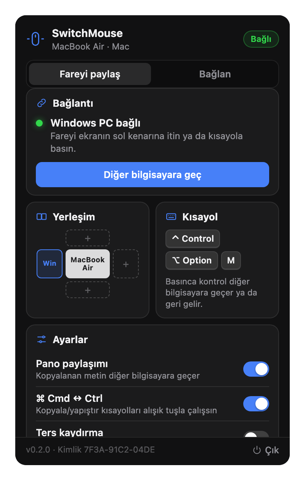

Push the cursor past the edge of your Mac screen and keep working on your Windows PC, keyboard included. No cloud, no account.

Features
Push past the edge facing the other screen and you're there. Come back the same way.
Ctrl Alt M switches instantly. ⌃⌥M on Mac.
Paired once with a 6-digit code, then mutually authenticated TLS 1.3. Direct, no server.
Copy on one, paste on the other. Secrets from password managers are never sent.
Edges are worked out per display, whatever your layout.
Lives quietly in the macOS menu bar. Optional Cmd ↔ Ctrl swap.
How it works
On the computer the mouse is plugged into, choose Fareyi paylaş and mark where the other screen sits.
On the other one, choose Bağlan and pick it from the list, or type its IP.
Enter the 6-digit code shown on the first computer. It reconnects on its own from then on.
Install
Questions
Both must be on the same local network; if the list stays empty, type the other computer's IP. A VPN with a kill switch (e.g. Mullvad lockdown mode) blocks local traffic unless local network sharing is enabled.
No. The two computers talk directly over an encrypted connection. No server, account or telemetry.
Windows' secure screens (Ctrl+Alt+Del, UAC prompts, lock screen). To control apps running as administrator, run SwitchMouse as administrator too.
Each release ships SHA256SUMS.txt. Compare with shasum -a 256 <file> on macOS or certutil -hashfile <file> SHA256 on Windows.